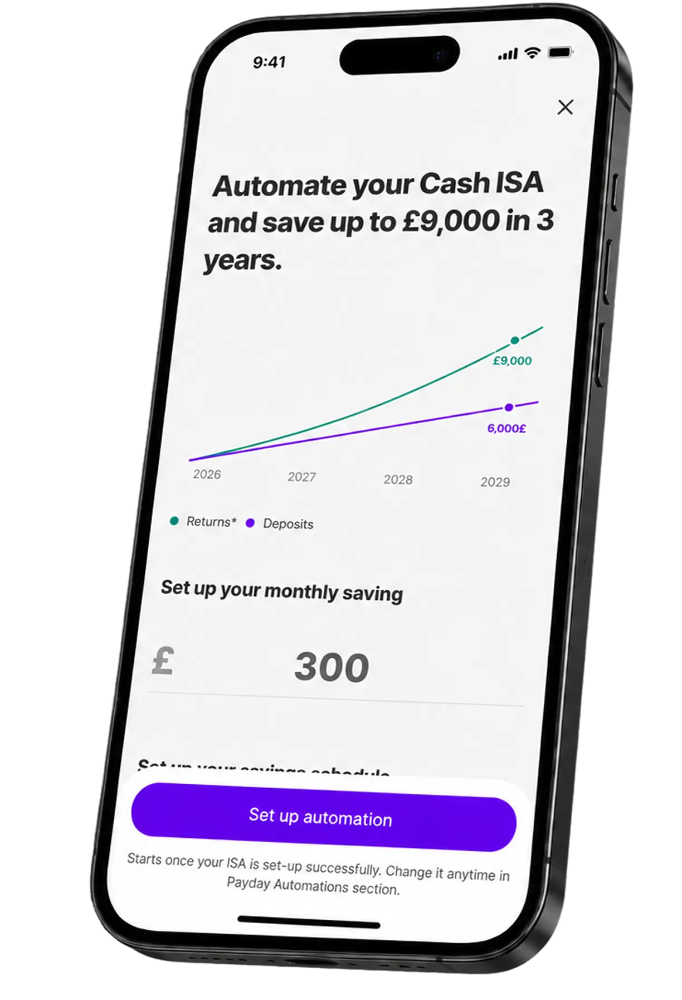

Saving automations live in their own part inside app. Unless users went looking for them, they rarely discovered how powerful they could be.
One-click Automation Setup was a quick 1–2 sprint project across design and implementation. It introduced automations inside the products users were already opening.
We started with Cash ISA, recommending a saving rule, a suggested amount, and a Deposit Split in one step.
It was also a first step towards a broader activation pattern for LISA, Trading, and Easy Access.
Automation and Deposit Split already existed, but they were introduced separately and too late in the journey.
Most users finished onboarding without automating their savings. Deposit Split appeared later as a passive feature, leaving a large gap between opening a Cash ISA and regularly funding it.
Increase automation adoption, Deposit Split adoption, and automated deposits among Cash ISA users.
Help users start saving with less effort while creating a reusable pattern for future products.
65% of Cash ISA users had no automation, and only 4.4% used Deposit Split.
The opportunity was not acquiring more users. It was activating the ones we already had.
Source: User base analysis, Looker dashboards, and customer segmentation.Users opening or transferring into a Cash ISA held much higher balances and converted more often.
The best moment to ask was when users were already thinking about adding money.
Source: Launch dashboards and customer segmentation analysis.Competitor research showed that recurring deposits were introduced immediately after onboarding.
Our launch data later confirmed that high-intent entry points consistently converted better.
Source: Competitive research, launch dashboards, and conversion analysis.Why: We believed automation should appear when users were already thinking about saving.
So we placed it inside Cash ISA onboarding and deposit flows, where intent was higher.
Why: We believed users should confirm a recommendation instead of configuring settings.
So we pre-filled the rule, amount, and Deposit Split to reduce decision effort.
Why: We believed users would commit more easily if the benefit felt tangible.
So we used a three-year projection to make the long-term value of recurring deposits tangible.
The honest miss: existing users responded much more slowly than new users.
Automation and Deposit Split already existed. The real improvement came from showing them when users were already thinking about saving.
Next time, I'd map more high-intent moments before designing the flow, from salary deposits to transfers and new goals.
New users responded because the setup became part of opening a Cash ISA. Existing users were harder to move with a passive banner.
Next time, I'd design dedicated reactivation journeys that give existing users a clear reason to automate now.